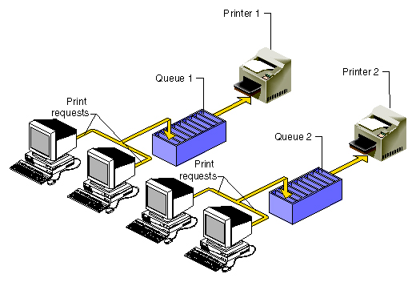
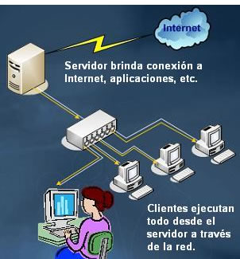

Función de los sistemas operativos
Función de los sistemas operativos
Las funciones de un sistema operativo más destacadas son la gestión de procesos, de la memoria y la comunicación entre aplicaciones, entre otras. Un sistema operativo es el software principal o conjunto de programas que gestionan todos los procesos que surgen dentro de un aparato electrónico. No son los programas y aplicaciones que usamos habitualmente para el manejo por ejemplo del ordenador, sino las características que permiten que esas aplicaciones funcionen.
Uno de los propósitos del sistema operativo es gestionar el núcleo, los recursos de localización y el hardware de nuestra máquina. La mayoría de los aparatos electrónicos en el mercado que cuentan con un microprocesador, tienen un sistema operativo. Al inicio de la creación de sistemas operativos, el mayor fallo que tenían era que tenían muy poca capacidad y muy baja utilización, así que normalmente se hacía de forma manual a través de un batch. Dentro del batch los Jobs, que son las órdenes que se necesitan para realizar una acción, se activaban manualmente. A medida que aumentaba la complejidad de los sistemas operativos, se necesitaba automatizar esas tareas, apareciendo así los primeros intérpretes de comandos. Con todas las actualizaciones y descubrimientos que se han hecho a lo largo de los años, nada queda ya de los primeros sistemas operativos que había que activar manualmente. Cada vez son más sofisticados y se activan solos para proteger la máquina y realizar tareas necesarias y rutinarias.
Funciones principales de un sistema operativo
Como comentamos antes, la mayoría de los sistemas operativos ya vienen prefabricados con una lista de tareas que realizar dentro de nuestro aparato electrónico para que todo vaya sobre ruedas. Sólo es necesario realizar pequeños ajustes para adecuar la configuración a las necesidades de nuestro aparato.
1- Gestión de procesos
Una de las partes más importantes de un sistema operativo es la gestión de los procesos. Los procesos son los recursos que necesita un programa para ejecutarse. Esto implica el uso de la memoria, del tiempo del CPU (unidad central de procesamiento) y los archivos a los que necesita acceso la aplicación para funcionar bien. El sistema operativo, para encargarse del buen funcionamiento de la máquina, se dedica a crear y destruir procesos, pararlos y reanudarlos y ayudar con los mecanismos de comunicación entre procesos.
2- Gestión de la memoria principal
Otro de los componentes importantes del sistema operativo es la gestión de la memoria principal. La memoria consiste en un almacén de datos que es compartido por la CPU y las aplicaciones y que pierde su capacidad si surge algún fallo. Por eso, es importante que el sistema operativo se encargue de la gestión de la memoria, para que no se sature y se pierdan datos e información ahí contenidos. El sistema operativo se asegura de que parte de la memoria está siendo utilizada y por qué. Decide dónde se colocan los procesos cuando haya un hueco libre y asigna y reclama el espacio que sea necesario para que siempre esté bien aprovechada.
3- Gestión del almacenamiento secundario
La memoria es algo muy volátil y ante cualquier fallo puede perder la información contenida en ella. Por esto, es necesario tener un segundo módulo de almacenamiento que pueda almacenar los datos a largo plazo. Al igual que con la memoria principal, el sistema operativo se encarga de gestionar el espacio libre y asigna el orden de guardado. También se asegura de que todo quede perfectamente guardado, así como de cuánto espacio queda libre y dónde.
4- Gestión del sistema de entrada y salida
El sistema operativo es el encargado de gestionar los puertos de entrada y salida del ordenador, como pueden ser unos auriculares, una impresora, un monitor, etc. Antiguamente, cuando querías instalar un nuevo puerto externo, era importante tener un disco de instalación que contuviera los drivers para que el ordenador los aceptase. Ahora, en nuestros días, el sistema operativo del propio ordenador se suele encargar de buscar en la red la información necesaria para que los nuevos puertos externos funcionen a la perfección.

5- Registro del sistema de archivos
Los archivos son formatos creados por sus dueños que se convierten en tablas, y el sistema operativo es el encargado de registrarlas y guardarlas. El sistema operativo se encarga de construir, eliminar y archivar los archivos creados, así como de ofrecer las herramientas necesarias para poder acceder a los archivos en cualquier momento. Establece la comunicación entre los archivos y las unidades de almacenamiento, y por último, se puede configurar de manera que haga copias de seguridad de todos los archivos, para que en caso de accidente, no se pierdan todos.
6- Seguridad
El sistema operativo es el encargado de la seguridad de la máquina. Una de las actividades más importantes es el acceso de usuarios o programas a donde no deben. Existen muchos virus que pueden afectar a nuestro sistema, y el sistema operativo se encarga de que esto no suceda. Se puede configurar el sistema operativo de manera que se realicen controles periódicos y se establezcan los controles de seguridad que tiene que realizar.
7- Comunicación entre elementos y aplicaciones
A través de las interfaces de red, el sistema operativo mantiene la comunicación entre los distintos componentes de la máquina y todas las aplicaciones que estén en contacto con ellos. Envía y recibe información.

8- Informar del estado del sistema
Existen una serie de aplicaciones que vienen instaladas por defecto junto al sistema operativo, pero que no son un sistema como tal. Estas ofrecen un entorno y unas características básicas para el desarrollo y la ejecución de los programas que están instalados en nuestra máquina. Informa del estado del sistema, si se necesita realizar alguna acción o aprobar que se realice alguna acción, como pueden ser las actualizaciones automáticas. Además, da soporte a los distintos lenguajes de programación para que cualquier tipo de aplicación sea operativa en nuestra máquina. Por supuesto, cuenta con programas que mejoran la comunicación entre las aplicaciones.

9- Gestión de recursos
Administra todas las partes principales de la máquina a través de su gestor de recursos. Su función como administrador conlleva la seguridad y comunicación de la unidad central de procesamiento o CPU, los dispositivos externos que son conectados al ordenador. Al igual que la memoria interna y la memoria secundaria, donde a veces tiene que hacer limpieza y cambiar partes almacenadas de una a otra. En general, administra todos los recursos del sistema y todos los recursos que entran en contacto con el mismo
10- Administración de usuarios
El sistema operativo también es el encargado de gestionar los perfiles almacenados en el ordenador dependiendo de quien tenga creado un perfil en él.
Mapa mental